# 任务
# 任务列表
流式采集和数据库同步的区别：流式采集的目的端只能是Kafka，可以理解为目的端是Kafka的同步任务。
- 任务查询：可根据“关键字”、“类型”、“状态”、“源端”、“目标端”、“责任人”组合进行任务查询，“重置”可清除筛选条件；
- 添加任务：新增任务，可选“流式采集”、“数据库同步”；
- 删除任务：删除已有任务及相应的实例；
- 任务操作：进行任务“发布”、“暂停”、“恢复”、“重启”、“断点恢复”、“重新采集”等运维操作。
# 添加任务
点击“添加”按钮进行任务添加，填写“任务名称”，选择任务“类型”，选择“数据源类别”、“输出目标类别”：
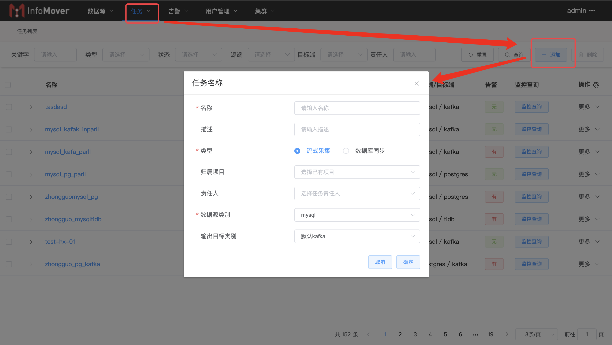
# 流式采集
# 任务配置
- 功能描述: 配置任务名称、类型及数据源与输出目标类别。
- 操作步骤：
- 配置任务名称：demo-collect-Oracle
- 选择任务类型为“流式采集”;
- 选择数据源类别，可选Oracle/MySQL/postgres；
- 选择输出目标类别为“默认kafka”（默认kafka：内部Kafka集群，数据Topic使用Connector运行的Kafka集群；数据源中定义的kafka：数据源中配置的Kafka集群，当前Kafka不是Connector运行使用的Kafka集群时只存数据Topic）。
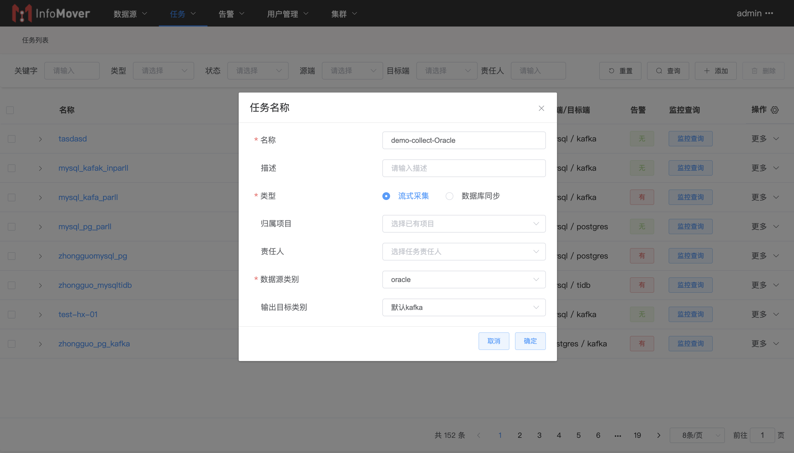
点击“确认”默认进入任务配置页面，任务配置默认生成“源端信息”、“目标端信息”、“集群信息”节点：
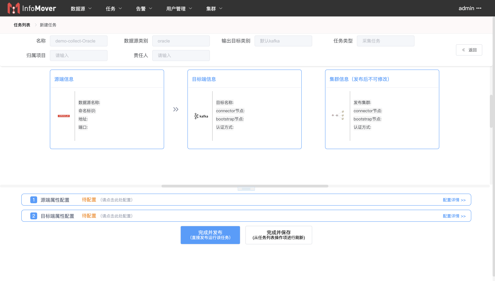
# 源端属性配置
# Oracle源端属性配置
双击“源端信息”节点或点击“源端属性配置”进入源端信息配置：
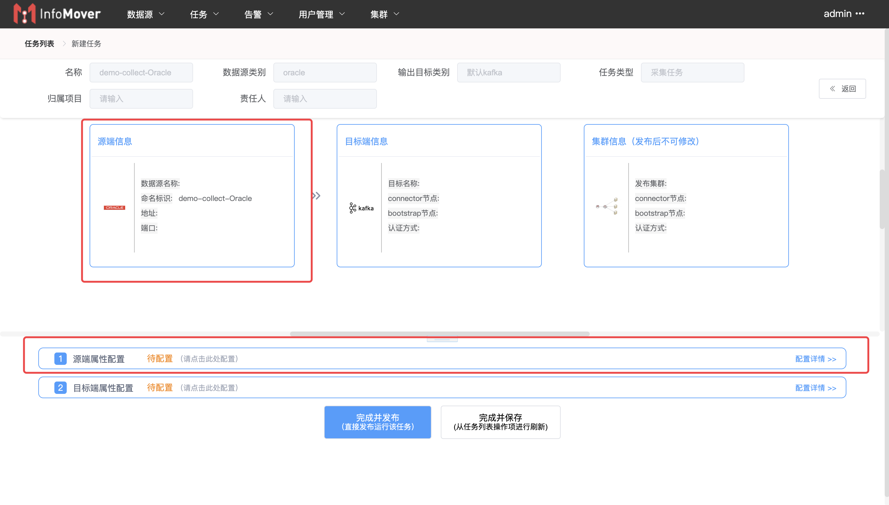
属性配置
- 功能描述: 配置数据源属性。
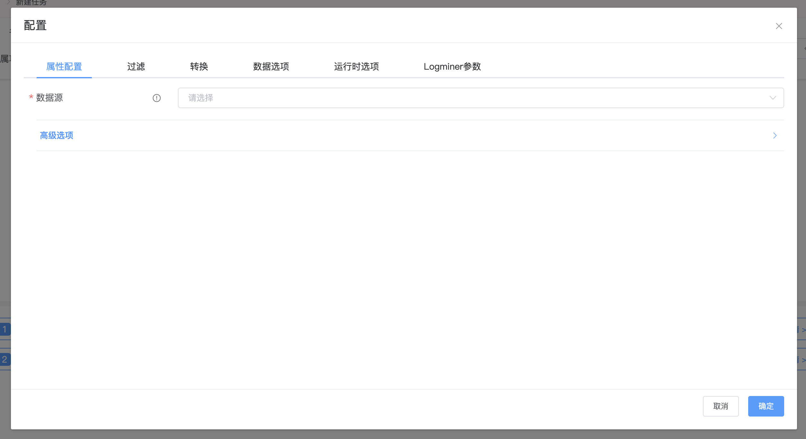
- 参数列表
| 参数名称 | 参数含义 | 必填 | 特殊说明 |
|---|---|---|---|
| 数据源 | 数据库链接。 | 是 | 选择“数据源”配置的数据库链接 |
| 高级选项 | |||
| Decimal精度控制模式 | |||
| Schema生成（值） | 生成数据是否包含Schema信息，默认false。 | 是 | True:包含Schema的数据 False:发送Debezium的json格式数据 |
| 值转换器 | 值转换器，默认为org.apache.kafka.connect.json.JsonConverter | 是 | |
| 键转换器 | 键转换器，默认为org.apache.kafka.connect.json.JsonConverter | 是 | |
| Schema生成（键） | 默认false | 是 | |
| 副本数量 | topic的副本数量，默认值为1. | ||
| 分区数 | topic的分区数，默认值为1. | ||
| 删除策略 | topic的消息删除策略，默认值为delete. | delete：根据数据已保存的时间，进行删除； compact：根据messages中的key，进行删除操作（保留最新的记录）。 | |
| 压缩方式 | topic的压缩方式，默认值为zstd. | uncompressed：不压缩 zstd/lz4/snappy/gzip：压缩类型 producer：保留生产者设置的原始压缩编解码 | |
| 保留时间 | topic数据保留时间，默认值为-1. | -1表示永久保留。 | |
| 保留大小 | topic数据保留大小，默认值为10737418240（10GB）。 | ||
| 时间精度模式 | 时间，日期和时间戳可以用不同类型的精度表示。默认值为connect。 | adaptive_time_microseconds（默认值）根据数据库列的类型，使用毫秒、微秒或纳秒精度值，准确地捕获数据库中的日期、日期时间和时间戳值，但TIME类型字段除外，TIME类型字段始终捕获为微秒。 adaptive（已弃用）根据数据库列的类型，使用毫秒、微秒或纳秒精度值，准确捕获数据库中的时间和时间戳值。 connect始终使用Kafka connect对时间、日期和时间戳的内置表示来表示时间和时间戳值，无论数据库列的精度如何，都使用毫秒精度。 |
过滤
- 功能描述: 配置采集的库表。
- 操作步骤：
- 选择“数据库”，列出库中可用的表；
- 勾选一个或多个库表，点击“+”添加到“已选”。
- 选择“数据库”，列出库中可用的表；
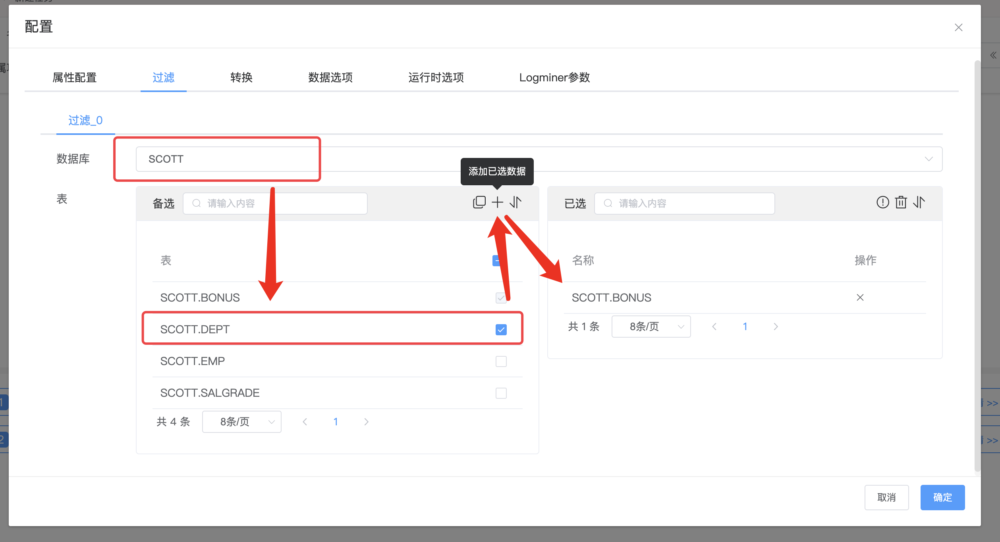
转换
- 功能描述: 配置数据转换路由规则。
- 操作步骤：
- 填写“名称”；
- 选择“调用模型”。
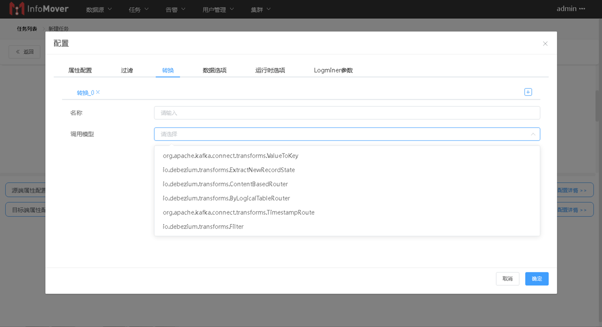
数据选项
- 功能描述: 配置数据采集参数。
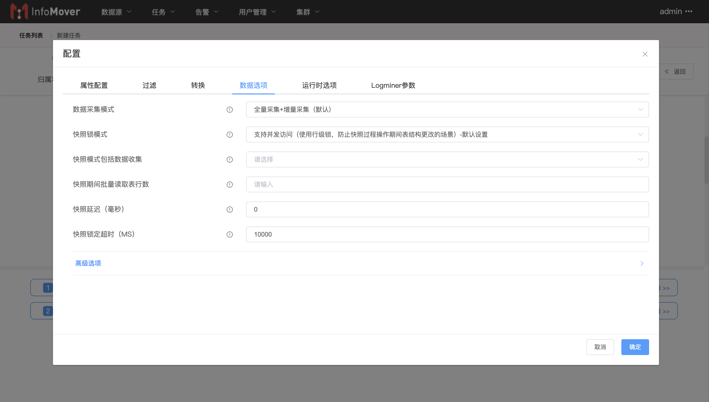
- 参数列表
| 参数名称 | 参数含义 | 必填 | 特殊说明 |
|---|---|---|---|
| 数据采集模式 | 在连接器启动时运行快照的模式。 默认模式：全量采集+增量采集。 | 是 | 选项包括： initial：全量采集+增量采集（默认）; schema_only：采集表结构+增量数据采集 |
| 快照锁模式 | 控制连接器在执行架构快照时如何在表上保持锁定。默认值为“加锁保护”。 | 是 | 控制连接器是否持有表锁以及持有表锁的时间。表锁阻塞连接器执行快照过程期间执行的某种类型的表变更操作。 shared：加锁保护 - 默认设置 （注释：使用行级锁，防止快照过程操作期间表结构更改的场景，支持并发访问）） none：不加锁保护（只适用于采集过程中表结构不被变更的场景） |
| 快照模式包括数据收集 | 必须设置此设置以指定要在创建或重新启动连接器时必须采集的表/集合列表。 | ||
| 快照期间批量读取表行数 | 在执行快照时应加载到内存中的最大记录数 | ||
| 快照延迟（毫秒） | 在毫秒中首先开始快照之前的延迟时间。默认为0 ms。 | ||
| 快照锁定超时（MS） | 在快照开头时要等待表锁的最大数量。如果在此时间框架中无法获取锁，则将中止快照。默认为10000。 | ||
| 高级选项 | |||
| 应覆盖快照期间使用的默认选择语句的表列表 | 此属性包含逗号分隔的完全限定表（db_name.table_name）或（schema_name.table_name），具体取决于表示的连接器。 | 选择各个表的语句是由ID'snapshot.select.statement. overrides.[db_name].[TABLE_NAME]'或'snapshot.select.statement.overrides.[schema_name].[table_name]'分别。这些属性的值是在快照期间从特定表中检索数据时要使用的SELECT语句。仅用于大附加表的可能使用情况正在设置一个特定点，在其中开始（恢复）快照，以防先前的快照被中断。 | |
| 删除操作是否产生墓碑事件 | 删除操作是否应由删除事件和子查询到事件（true）表示或仅由删除事件（false）表示。默认为false. | 默认值：采集任务为false，同步任务为true。 | |
| 转换器配置 | 可选的自定义转换器列表，而不是默认的转换器。 | 转换器使用“<converter.prefix> .type”配置选项定义，并使用选项'<converter.prefix>.<option>'配置。 | |
| 截断列到n个字符 | 将符合应截断的列的完全限定列名称的逗号分隔的正则表达式列表。 | ||
| 掩码列与n个星号 | 逗号分隔的正则表达式列表，匹配应以配置的星号（'*'）字符的已配置量屏蔽的完全限定列的全文名称。 | ||
| 哈希模型 | 逗号分隔的正则表达式列表，匹配应通过散列输入屏蔽的完全限定列的全文名称。使用指定的哈希算法和盐。 | ||
| 通过数据类型传播源类型 | 逗号分隔的正则表达式列表，与特定于数据库的数据类型名称匹配，该名称将数据类型的原始类型和原始长度添加为发射的更改记录中的相应字段模式。 | ||
| 按列传播源类型 | 逗号分隔的正则表达式列表匹配完全限定的列名称，该列将列的原始类型和原始长度添加为发射的更改记录中的相应字段模式。 | ||
| 消息分区键 | 分号分隔的表达式列表，匹配完全限定的表和列用作消息键。 | 每个表达式必须匹配模式'<完全限定表名称>:<key列>'，其中表名称可以定义为（db_name.table_name）或（schema_name.table_name），具体取决于特定的连接器和密钥列是表示自定义密钥的逗号分隔列列表。对于没有显式密钥配置的任何表，表的主键列将用作消息键.Example： dbserver1.inventory.orderlines:orderId,orderLineId;dbserver1.inventory.orders:id | |
| 将事务元数据信息存储在专用主题中 | 使事务元数据提取与事件计数一起。默认为false。 | ||
| 是否清洗 | 字段名称是否会对Avro命名约定清洗。默认为false。 |
运行时选项
- 功能描述: 配置任务运行参数。
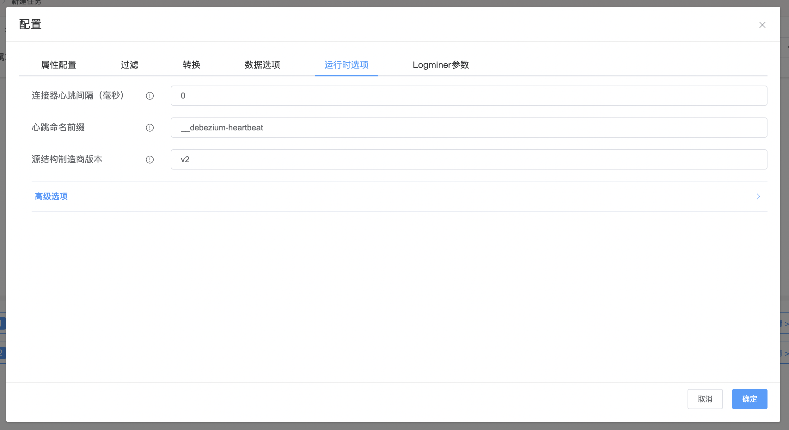
- 参数列表
| 参数名称 | 参数含义 | 必填 | 特殊说明 |
|---|---|---|---|
| 连接器心跳间隔（毫秒） | 间隔的长度在毫秒内，其中连接器周期性地将心跳消息发送到心跳主题。使用0禁用心跳消息。默认情况下禁用。 | ||
| 心跳命名前缀 | 用于将心跳主题命名的前缀 topics.Defaults 到 __debezium-heartbeat。 | ||
| 源结构制造商版本 | 消息中公开可见源部件格式的版本。默认为v2。 | ||
| 高级选项 | |||
| 跳过操作 | 在流期间跳过逗号分隔的操作列表，定义为：'c'，用于插入/创建;'u'更新;'d'删除。默认情况下，不会跳过任何操作。 | ||
| 事件反序列化故障处理 | 指定应处理事件期间的故障（即遇到损坏的事件时），默认值fail。 | 'fail'（默认值）表示有问题事件的异常，并提出其位置，导致连接器停止; “warn”问题事件及其立场将被记录，并且将跳过事件; 'ignore'将跳过问题事件。 | |
| 更改事件缓冲区大小 | 更改事件的最大大小从数据库日志读取但尚未录制或转发。默认值为8192，应始终大于最大批次大小。 | ||
| 轮询间隔（MS） | 在没有以毫秒为单位的情况下接收到没有事件后，要查看新更改事件的时间。默认为500毫秒。 |
（待完善）Logminer参数
- 功能描述: 配置任务运行参数。
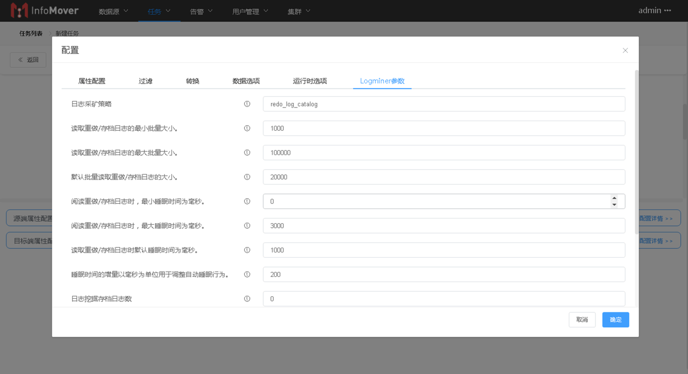
- 参数列表
| 参数名称 | 参数含义 | 必填 | 特殊说明 |
|---|---|---|---|
| 日志采矿策略 | |||
# MySQL源端属性配置
任务配置默认生成“源端信息”、“目标端信息”、“集群信息”节点：
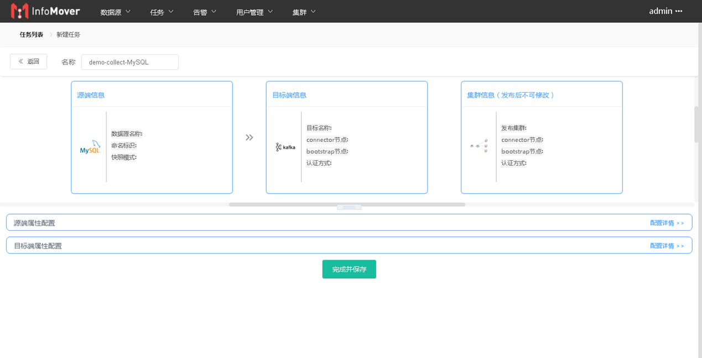
双击“源端信息”节点或点击“源端属性配置”进入源端信息配置：
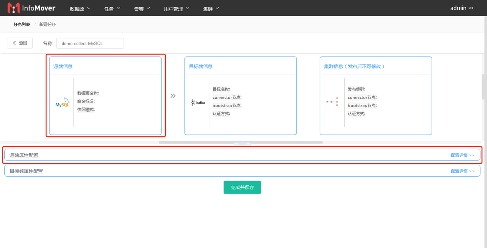
属性配置
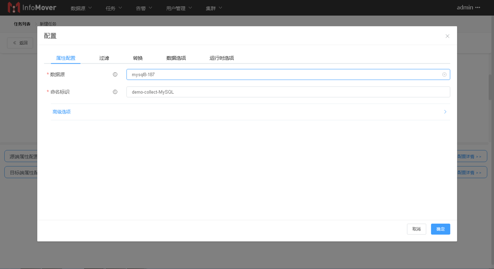
- 功能描述: 配置数据源属性。
- 参数列表
| 参数名称 | 参数含义 | 必填 | 特殊说明 |
|---|---|---|---|
| 数据源 | 数据库链接。 | 是 | 选择“数据源”配置的数据库链接 |
| 命名标识 | 唯一名称标识数据库服务器和所有记录的偏移，并且用作所有模式和主题的前缀。默认使用任务名称。 | 是 | 每个不同的安装都应具有单独的命名空间，并在最多的一个debezium连接器上监控。 |
| 高级选项 | |||
| Decimal精度控制模式 | DECIMAL和NUMERIC类型字段的处理方式。当前默认值为string。 | precise：在变更事件中数值以java.math.BigDecimal表示并保存为二进制形式。 double：数值表示为double形式，可能导致精度丢失。 string：数值格式化编码为字符串，消费时精度保存但类型信息丢失。 | |
| Schema生成（值） | 默认false | value.converter.schemas.enable | |
| 群集ID偏移量 | 此偏移量用于从基本配置的群集ID生成这些ID。默认10000。 | 是 | 只有相关的如果配置了并行快照。在并行快照期间，向数据库客户端打开多个连接，每个连接都需要自己的唯一连接ID。 |
| 连接超时（MS） | 在尝试在定时之前尝试连接到数据库之后的最长时间，以毫秒为单位。默认为30,000（30秒）。 | ||
| 保持连接活动（真/假） | 是否应使用单独的线程来确保连接保持活力。默认为True。 | ||
| 保持活动间隔（MS） | 连接检查是否使用保持存在线程的时间间隔，以毫秒为单位，默认为60,000（1分钟）。 | ||
| Statement初始化 | 建立与数据库的JDBC连接（不是Binlog读取连接）时要执行的分号分隔列表。 | 否 | 请注意，连接器可以以自己的自行决定建立JDBC连接，因此这通常仅用于配置会话参数，但不用于执行DML语句。使用双分号（';;'）使用分号作为字符而不是分隔符。 |
| 值转换器 | 值转换器，默认为org.apache.kafka.connect.json.JsonConverter | 是 | |
| 键转换器 | 键转换器，默认为org.apache.kafka.connect.json.JsonConverter | 是 | |
| Schema生成（键） | 生成数据是否包含Schema信息，默认包含（true）。 | 是 | True:包含Schema的数据 False:发送普通的json格式数据 |
| 副本数量 | topic的副本数量，默认值为1. | ||
| 分区数 | topic的分区数，默认值为1. | ||
| 删除策略 | topic的消息删除策略，默认值为delete. | ||
| 压缩方式 | topic的压缩方式，默认值为producer. | ||
| 保留时间 | topic的消息保留时间，默认值为-1. | -1表示永久保留。 | |
| 时间戳 | 时间、日期和时间戳的精度表示。默认值为connect。 | adaptive_time_microseconds（默认值）根据数据库列的类型，使用毫秒、微秒或纳秒精度值，准确地捕获数据库中的日期、日期时间和时间戳值，但TIME类型字段除外，TIME类型字段始终捕获为微秒。 adaptive（已弃用）根据数据库列的类型，使用毫秒、微秒或纳秒精度值，准确捕获数据库中的时间和时间戳值。 connect始终使用Kafka connect对时间、日期和时间戳的内置表示来表示时间和时间戳值，无论数据库列的精度如何，都使用毫秒精度。 |
过滤
- 功能描述: 配置采集的库表。
- 操作步骤：
- 选择“数据库”，列出库中可用的表；
- 勾选一个或多个库表，点击“+”添加到“已选”。
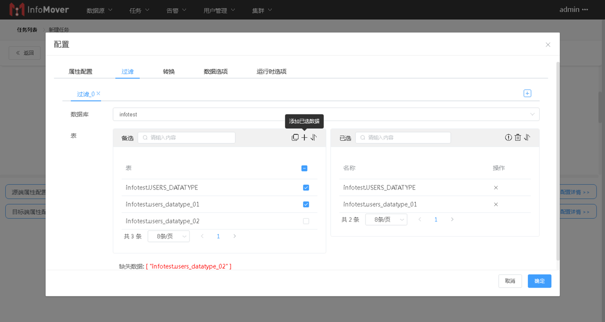
转换
- 功能描述: 配置数据转换路由规则。
- 操作步骤：
- 填写“名称”；
- 选择“调用模型”。
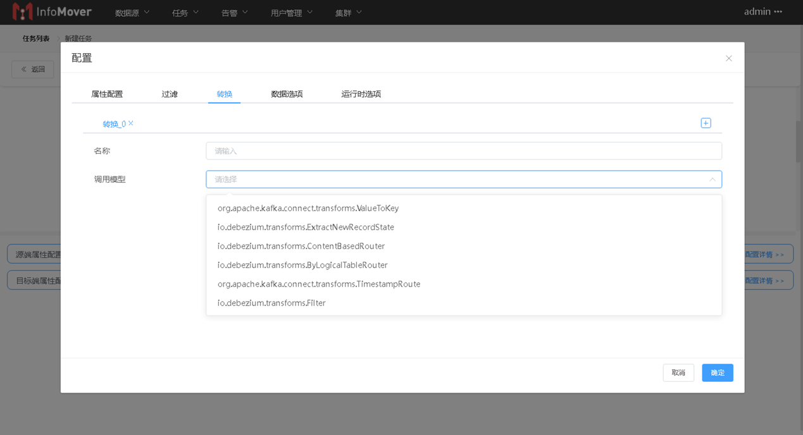
数据选项
- 功能描述: 配置数据采集参数。
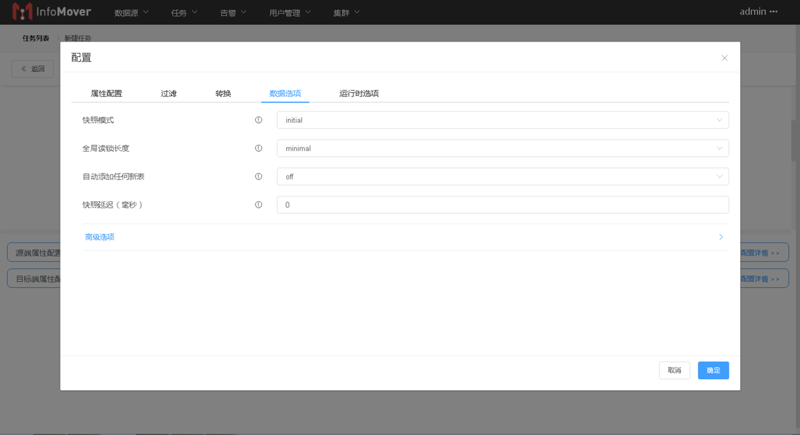
- 参数列表
| 参数名称 | 参数含义 | 必填 | 特殊说明 |
|---|---|---|---|
| 快照模式 | 在连接器启动时运行快照的模式。 | 是 | 采集表进行快照的模式。 initial（默认值）：全量快照+增量数据，仅在未记录逻辑服务器的偏移量时运行快照。 initial_only：全量快照，仅在未记录逻辑服务器的偏移量时执行快照，不采集后续变更事件。 when_needed：全量快照+增量数据+需要时重新执行快照，连接器判断需要时（没有可用的偏移量；偏移量指定了不可用的binlog位置或GTID），会在启动时运行快照。 never：增量数据，不执行快照。从binlog开头进行读取。当binlog包含整个数据库的历史时数据才完整。 schema_only：表结构快照+增量数据，表结构的快照，不包含数据。适用于不需要数据的一致性快照但需要连接器启动以来的变更事件的场景。 schema_only_recovery：表结构快照+增量数据+可恢复schema，连接器采集中的恢复设置。重启连接器时，此设置启用对损坏或丢失的数据库历史主题的恢复。 |
| 全局读锁长度 | 快照锁定模式，控制连接器在执行快照时连接到全局读锁的长度。默认值为“minimal”。 | 默认值为“minimal”。 extended：快照期间阻止所有写入操作。 minimal：当连接器读取数据库schema和其他元数据时，仅在快照的初始阶段持有全局读取锁。快照的剩余工作包括从每个表中选择所有行，即使在全局读取锁释放以及其他MySQL客户端更新数据库时，使用可重复读事务以一致的方式完成。 minimal_percona：当连接器读取数据库schema和其他元数据时，仅在快照的初始阶段持有（Percona特有的）备份锁。此锁只阻止非事务表（如MyISAM）上的DDL和DML。快照的剩余工作包括从每个表中选择所有行，即使在全局读取锁释放以及其他MySQL客户端更新数据库时，使用可重复读事务以一致的方式完成。 none：快照过程中避免加表锁。只能用在schema_only或schema_only_recovery的快照模式中，否则可能造成数据不一致。 | |
| 自动添加任何新表 | 测试版功能：在连接器重新启动时，连接器将检查是否已添加任何新表，并将其快照。目前只有两个选项，默认为off。 | 'off'：默认行为。不要快照新表。'parallel': 当快照完成时，独立的Binlog Reader将开始读取新表的事件，直到它捕获到现在的时间。此时，旧的和新的Binlog Reader暂时停止，新的Binlog Reader将开始读取所有已配置表的Binlog。并行Binlog Reader将配置配置的服务器ID为10000+主Binlog Reader的服务器ID。 | |
| 快照延迟（毫秒） | 在毫秒中首先开始快照之前的延迟时间。默认为0。 | 连接器在执行快照之前等待的时间间隔（以毫秒为单位）。如果要在集群中启动多个连接器，此属性有助于避免快照中断。默认为0毫秒 | |
| 高级选项 | |||
| 快照获取行数/批 | 在执行快照时应加载到内存中的最大记录数。 | 从表中单次获取记录的最大行数。快照以批量的形式读取表。 | |
| 应覆盖快照期间使用的默认选择语句的表列表 | 此属性包含逗号分隔的完全限定表（db_name.table_name）或（schema_name.table_name），具体取决于表示的连接器。 | 选择各个表的语句是由ID'snapshot.select.statement. overrides.[db_name].[TABLE_NAME]'或'snapshot.select.statement.overrides.[schema_name].[table_name]'分别。这些属性的值是在快照期间从特定表中检索数据时要使用的SELECT语句。仅用于大附加表的可能使用情况正在设置一个特定点，在其中开始（恢复）快照，以防先前的快照被中断。 | |
| 事件反序列化故障处理 | binlog事件反序列化异常的响应模式。默认值fail。 | fail：抛出异常，该异常提示问题事件及其binlog偏移量，异常会造成连接器停止。 warn：记录问题事件及其binlog偏移量，并跳过该事件。ignore：跳过问题事件，不记录任何内容。 | |
| 启用时间调整器 | False表示完全由数据库决定。MySQL允许用户插入2位数或4位数的年份值。两位数的值映射的年份范围是1970-2069。默认行为是连接器进行转换（true）。 | ||
| 过滤DML事件 | 如果设置为true，我们将仅生成DML事件，以便在MySQL服务器上写入的事务，其中包含UUIDs与由gtid.source.includes或gtid.source.excludes配置选项匹配的UUIDs，如果指定了配置选项。默认为true。 | ||
| 包括GTID源 | 在确定MySQL Server的Binlog中的起始位置时，源UUID用于包括GTID范围。 | ||
| 排除GTID源 | 在确定MySQL Server的Binlog中的起始位置时，源UUID用于排除GTID范围。 | ||
| 删除操作是否产生墓碑事件 | 删除操作是否应由删除事件和子查询到事件（true）表示或仅由删除事件（false）表示。默认为false. | 发出公告事件允许Kafka完全删除源记录删除后删除与给定键相关的所有事件。 | |
| 时间戳 | 时间，日期和时间戳可以用不同类型的精度表示，包括："adaptive","adaptive_time_microseconds","connect"。默认为connect. | 'adaptive_time_microseconds'：日期和时间戳值的精度是基于数据库列的精度;但是时间字段总是使用微秒精度; 'connect'：始终表示使用Kafka Connect的内置表示的时间，日期和时间戳的时间，日期和时间戳值，无论数据库列的精度如何，它使用毫秒精度。 | |
| 二进制处理 | 指定如何在更改事件中表示二进制（BLOB，二进制等）列，默认为bytes。 | 'bytes'表示二进制数据转为字节数组（默认）; 'base64'表示二进制数据转为base64编码的字符串; 'hex'表示二进制数据转为十六进制编码（Base16）字符串 | |
| BIGINT无符号处理 | 指定在更改事件中应表示Bigint无符号列，默认为long。 | 'precise'使用java.math.bigdecimal表示使用二进制表示和Kafka Connect的'org.apache.kafka.connect.data.Decimal'类型; 'long'（默认值）表示使用Java的“LONG”的值，这可能无法提供精度，但在消费者中使用的更容易。 | |
| 是否输出数据库架构更改 | 连接器是否应将数据库架构的更改发布到Kafka主题，以与数据库服务器ID相同的名称。每个模式更改都将使用包含数据库名称的键进行录制，并且其值包括新架构的逻辑描述和可选的DDL语句。默认值为“true”。这与连接器内部如何记录数据库历史记录。 | ||
| 在更改事件中包含原始SQL查询 | 连接器是否应包括生成更改事件的原始SQL查询。默认值为false。 | 注意：此选项需要使用Binlog_Rows_Query_Log_Events选项配置MySQL。从快照生成的事件不会出现查询。警告：启用此选项可能会通过在更改事件中包含原始SQL语句，公开表明或屏蔽的表或字段。因此，默认值为“false”。 | |
| 数据库历史级别 | 应该用于存储和恢复数据库架构更改的数据库History类的名称。历史记录的配置属性是以'database.history.'为前缀。 | 默认值：io.debezium.relational.history.KafkaDatabaseHistory | |
| 流式结果集大小 | 表的行数必须包含流程结果，而不是在快照期间将全部拉入内存。默认为1,000。 | 使用0表示流式处理所有结果，并完全避免检查每个表的大小。 | |
| Binlog Reader缓冲区大小 | Binlog Reader使用的展望缓冲区的大小来决定正在进行的事务是否会被提交或回滚。使用0来禁用远程缓冲。默认为0（即禁用缓冲）。 | ||
| 截断列到n个字符 | 将符合应截断的列的完全限定列名称的逗号分隔的正则表达式列表。 | ||
| 掩码列与n个星号 | 逗号分隔的正则表达式列表，匹配应以配置的星号（'*'）字符的已配置量屏蔽的完全限定列的全文名称。 | ||
| 哈希模型 | 逗号分隔的正则表达式列表，匹配应通过散列输入屏蔽的完全限定列的全文名称。使用指定的哈希算法和盐。 | ||
| 消息分区键 | 分号分隔的表达式列表，匹配完全限定的表和列用作消息键。 | 每个表达式必须匹配模式'<完全限定表名称>:<key列>'，其中表名称可以定义为（db_name.table_name）或（schema_name.table_name），具体取决于特定的连接器和密钥列是表示自定义密钥的逗号分隔列列表。对于没有显式密钥配置的任何表，表的主键列将用作消息键.Example： dbserver1.inventory.orderlines:orderId,orderLineId;dbserver1.inventory.orders:id |
运行时选项
- 功能描述: 配置任务运行参数。
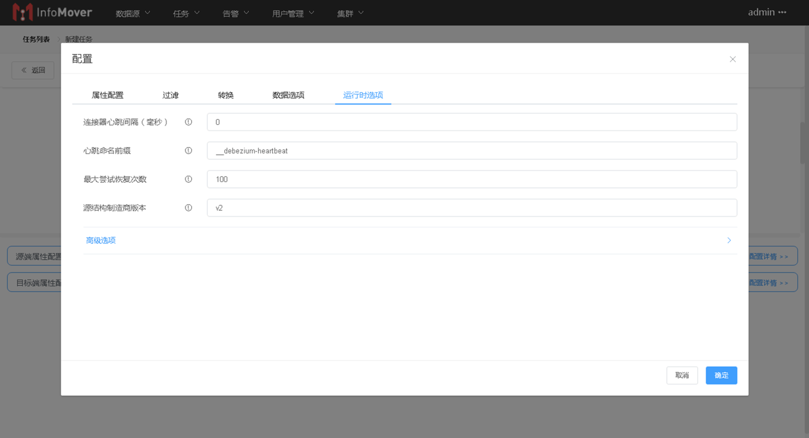
- 参数列表
| 参数名称 | 参数含义 | 必填 | 特殊说明 |
|---|---|---|---|
| 连接器心跳间隔（毫秒） | 间隔的长度在毫秒内，其中连接器周期性地将心跳消息发送到心跳主题。使用0禁用心跳消息。默认情况下禁用。 | ||
| 心跳命名前缀 | 用于将心跳命名的前缀topics.Defaults到__debezium-heartbeat。 | ||
| Connector异常恢复失败前最大尝试读取历史数据的次数 | 在Connector异常恢复失败前可尝试读取持久化历史数据的最大次数。无数据接收的最长等待时间是recovery.attempts x recovery.poll.interval.ms，默认为100. | ||
| 源结构制造商版本 | 消息中公开可见源部件格式的版本。默认值为v2。 | ||
| 高级选项 | |||
| 恢复期间轮询间隔（ms) | 在恢复期间调用持久数据的轮询时等待毫秒的数量。默认为100. | ||
| 跳过操作 | 在流期间跳过逗号分隔的操作列表，定义为：'c'，用于插入/创建;'u'更新;'d'删除。默认情况下，不会跳过任何操作。 | ||
| 事件反序列化故障处理 | 指定应处理事件期间的故障（即遇到损坏的事件时），默认值为fail | 'fail'（默认值）表示有问题事件的异常，并提出其位置，导致连接器停止; 'warn'问题事件及其立场将被记录，并且将跳过事件; 'ignore'将跳过问题事件。 | |
| 不一致的架构故障处理 | 指定应处理属于从内部模式表示（即内部表示的表中的表所缺少的Binlog事件（即，与数据库不一致） 。默认值为fail. | 'fail'（默认值）表示有问题的事件及其Binlog位置的异常，导致连接器停止; “warn”问题事件及其Binlog位置将被记录，并且将跳过事件; “ignore”问题事件将跳过。 | |
| 事件批量大小 | 每批源记录读取的最大大小。默认为2048。 | ||
| 事件缓冲区大小 | 更改事件的最大大小从数据库日志读取但尚未录制或转发。默认值为8192，应始终大于最大批次大小。 | ||
| 轮询间隔（MS） | 在没有以毫秒为单位的情况下接收到没有事件后，要查看新更改事件的时间。默认为500毫秒。 |
# PostgreSQL源端属性配置
任务配置默认生成“源端信息”、“目标端信息”、“集群信息”节点：
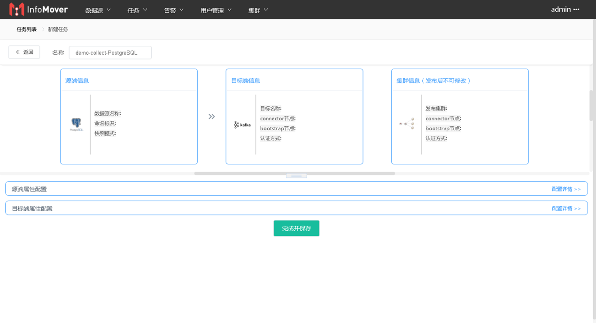
双击“源端信息”节点或点击“源端属性配置”进入源端信息配置：
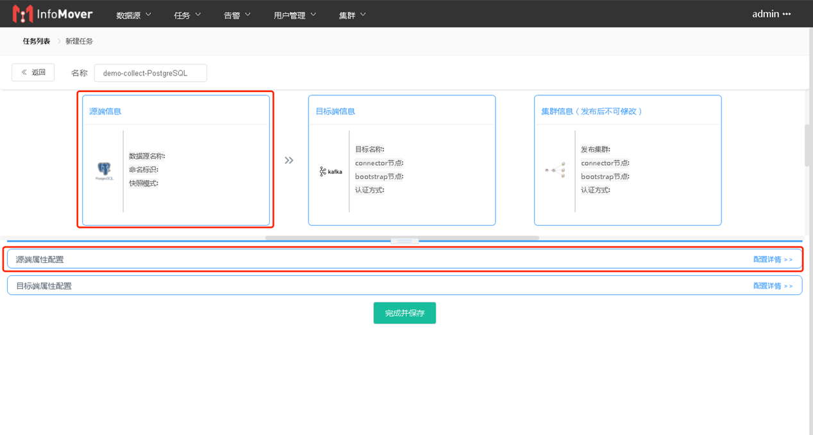
属性配置
- 功能描述: 配置数据源属性。
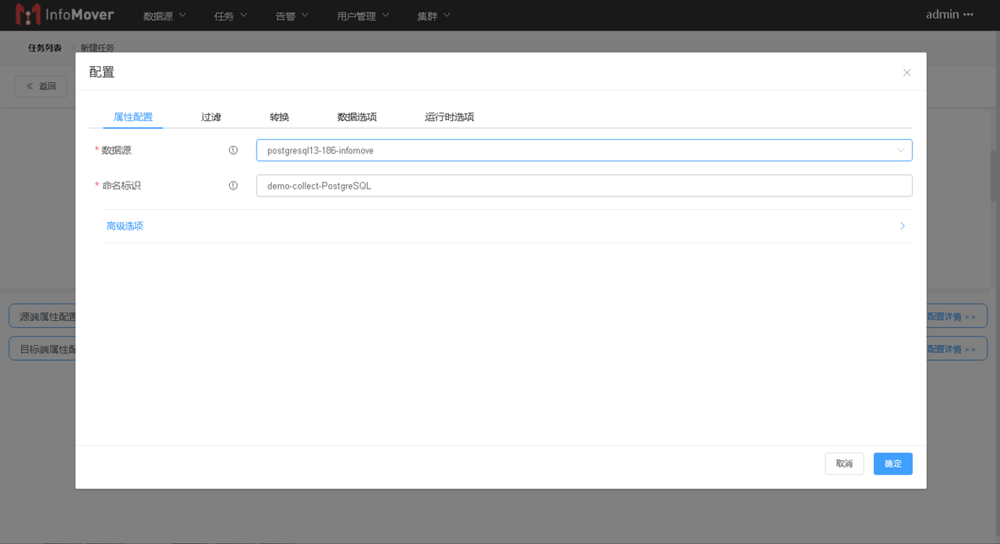
- 参数列表
| 参数名称 | 参数含义 | 必填 | 特殊说明 |
|---|---|---|---|
| 数据源 | 数据库链接。 | 是 | 选择“数据源”配置的数据库链接 |
| 名称标识 | 唯一名称标识数据库服务器和所有记录的偏移，并且用作所有模式和主题的前缀。默认使用任务名称，可修改。 | 是 | 每个不同的安装都应具有单独的命名空间，并在最多的一个debezium连接器上监控。 |
| 高级选项 | |||
| 值转换器 | 值转换器，默认为org.apache.kafka.connect.json.JsonConverter | 是 | |
| 键转换器 | 键转换器，默认为org.apache.kafka.connect.json.JsonConverter | 是 | |
| Schema生成（值） | 生成数据是否包含Schema信息，默认包含（true）。 | 是 | True:包含Schema的数据 False:发送普通的json格式数据 |
| Schema生成（值） | 默认true | 是 | value.converter.schemas.enable |
过滤
- 功能描述: 配置采集的库表。
- 操作步骤：
- 选择“数据库”，列出库中可用的表；
- 勾选一个或多个库表，点击“+”添加到“已选”。
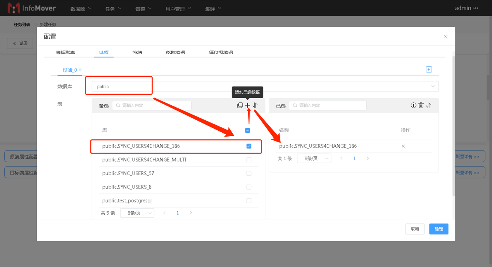
转换
- 功能描述: 配置数据转换路由规则。
- 操作步骤：
- 填写“名称”；
- 选择“调用模型”。
数据选项
- 功能描述: 配置数据采集参数。
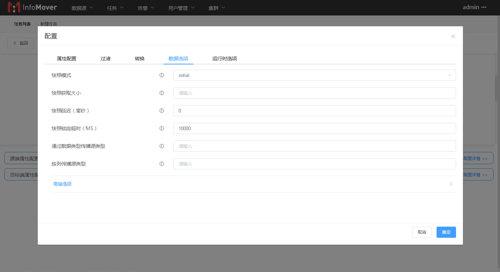
- 参数列表
| 参数名称 | 参数含义 | 必填 | 特殊说明 |
|---|---|---|---|
| 快照模式 | 在连接器启动时运行快照的模式。 | 是 | 默认为：initial。 initial：仅在未记录逻辑服务器的偏移量时执行快照。 always：连接器每次启动时都会执行快照。 never ：不执行快照。从Kafka offsets topic中记录的LSN开始采集变更事件，如果LSN不存在，则从服务器上创建PostgreSQL逻辑复制插槽的时间点开始采集。 initial_only：仅在未记录逻辑服务器的偏移量时执行快照，不采集后续变更事件（快照结束后停止任务）。 exported：已弃用。 custom：从参数snapshot.custom.class 获取自定义实现的接口。 |
| 快照获取大小 | 在执行快照时应加载到内存中的最大记录数 | ||
| 快照延迟（毫秒） | 在毫秒中首先开始快照之前的延迟时间。默认为0 ms。 | ||
| 快照锁定超时（MS） | 在快照开头时要等待表锁的最大数量。如果在此时间框架中无法获取锁，则将中止快照。默认为10000。 | ||
| 应覆盖快照期间使用的默认选择语句的表列表 | 此属性包含逗号分隔的完全限定表（db_name.table_name）或（schema_name.table_name），具体取决于表示的连接器。 | 选择各个表的语句是由ID'snapshot.select.statement. overrides.[db_name].[TABLE_NAME]'或'snapshot.select.statement.overrides.[schema_name].[table_name]'分别。这些属性的值是在快照期间从特定表中检索数据时要使用的SELECT语句。仅用于大附加表的可能使用情况正在设置一个特定点，在其中开始（恢复）快照，以防先前的快照被中断。 | |
| 删除操作是否产生墓碑事件 | 删除操作是否应由删除事件和子查询到事件（true）表示或仅由删除事件（false）表示。默认为false. | 发出公告事件允许Kafka完全删除源记录删除后删除与给定键相关的所有事件。 | |
| 十进制处理 | 指定十进制和数字列应该如何在更改事件中表示。 | precise'（默认值）使用java.math.bigdecimal来表示使用二进制表示和Kafka Connect's'org.apache在更改事件中编码的值.kafka.connect.data.decimal'类型; “string”使用字符串表示值; “double”代表了使用Java的“double”的价值，这可能无法提供精确度，但在消费者中使用的更容易。 | |
| 时间精确 | 时间，日期和时间戳可以用不同类型的精度表示，包括："adaptive","adaptive_time_microseconds","connect" | 'adaptive_time_microseconds'：日期和时间戳值的精度是基于数据库列的精度;但是时间字段总是使用微秒精度; 'connect'：始终表示使用Kafka Connect的内置表示的时间，日期和时间戳的时间，日期和时间戳值，无论数据库列的精度如何，它使用毫秒精度。 | |
| 定义自定义值转换器的前缀列表 | 可选的自定义转换器列表，而不是默认的转换器。 | 转换器使用“<converter.prefix> .type”配置选项定义，并使用选项'<converter.prefix>.<option>'配置。 | |
| 截断列到n个字符 | 将符合应截断的列的完全限定列名称的逗号分隔的正则表达式列表。 | ||
| 掩码列与n个星号 | 逗号分隔的正则表达式列表，匹配应以配置的星号（'*'）字符的已配置量屏蔽的完全限定列的全文名称。 | ||
| 使用哈希和盐的屏蔽 | 逗号分隔的正则表达式列表，匹配应通过散列输入屏蔽的完全限定列的全文名称。使用指定的哈希算法和盐。 | ||
| 通过数据类型传播源类型 | 逗号分隔的正则表达式列表，与特定于数据库的数据类型名称匹配，该名称将数据类型的原始类型和原始长度添加为发射的更改记录中的相应字段模式。 | ||
| 按列传播源类型 | 逗号分隔的正则表达式列表匹配完全限定的列名称，该列将列的原始类型和原始长度添加为发射的更改记录中的相应字段模式。 | ||
| 列PK映射 | 分号分隔的表达式列表，匹配完全限定的表和列用作消息键。 | 每个表达式必须匹配模式'<完全限定表名称>:<key列>'，其中表名称可以定义为（db_name.table_name）或（schema_name.table_name），具体取决于特定的连接器和密钥列是表示自定义密钥的逗号分隔列列表。对于没有显式密钥配置的任何表，表的主键列将用作消息键.Example： dbserver1.inventory.orderlines:orderId,orderLineId;dbserver1.inventory.orders:id | |
| 将事务元数据信息存储在专用主题中 | 使事务元数据提取与事件计数一起 | ||
| 清理，将遵守Avro命名约定的字段名称 | 字段名称是否会对Avro命名约定清洗 |
运行时选项
- 功能描述: 配置任务运行参数。
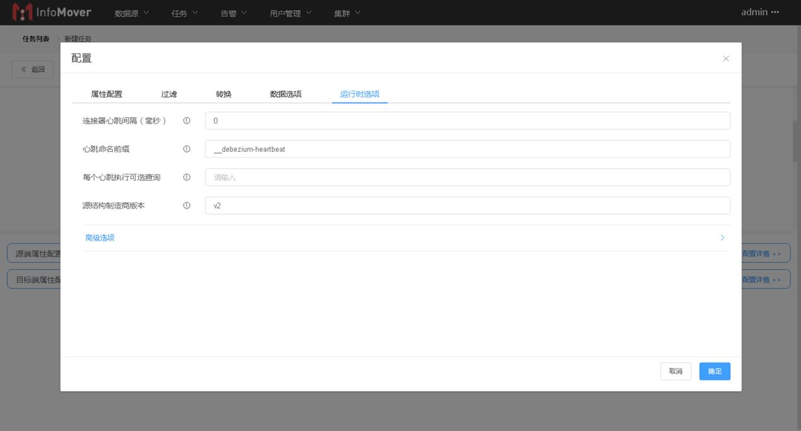
- 参数列表
| 参数名称 | 参数含义 | 必填 | 特殊说明 |
|---|---|---|---|
| 连接器心跳间隔（毫秒） | 间隔的长度在毫秒内，其中连接器周期性地将心跳消息发送到心跳主题。使用0禁用心跳消息。默认情况下禁用。 | ||
| 用于命名心跳主题的前缀 | 用于将心跳命名的前缀topics.Defaults到__debezium-heartbeat。 | ||
| 跳过操作 | 在流期间跳过逗号分隔的操作列表，定义为：'c'，用于插入/创建;'u'更新;'d'删除。默认情况下，不会跳过任何操作。 | ||
| 事件反序列化故障处理 | 指定应处理事件期间的故障（即遇到损坏的事件时） | 'fail'（默认值）表示有问题事件的异常，并提出其位置，导致连接器停止; 'warn'问题事件及其立场将被记录，并且将跳过事件; 'ignore'将跳过问题事件。 | |
| 更改事件缓冲区大小 | 更改事件的最大大小从数据库日志读取但尚未录制或转发。默认值为8192，应始终大于最大批次大小。 | ||
| 轮询间隔（MS） | 在没有以毫秒为单位的情况下接收到没有事件后，要查看新更改事件的时间。默认为500毫秒。 | ||
| 源结构制造商版本 | 消息中公开可见源部件格式的版本 |
# 目标端属性配置
# internal_kafka
双击“目标端信息”节点或点击“目标端属性”进入输出目标配置：
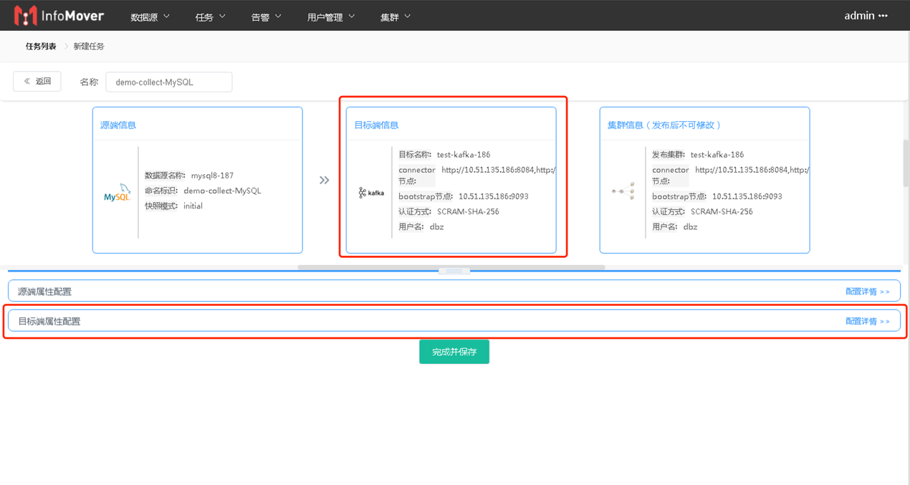
Kafka
- 功能描述: 配置存放数据的Kafka。
- 操作步骤：
- 选择已配置的“集群”;
- “Connector节点”、“bootStrap节点”信息自动带出。
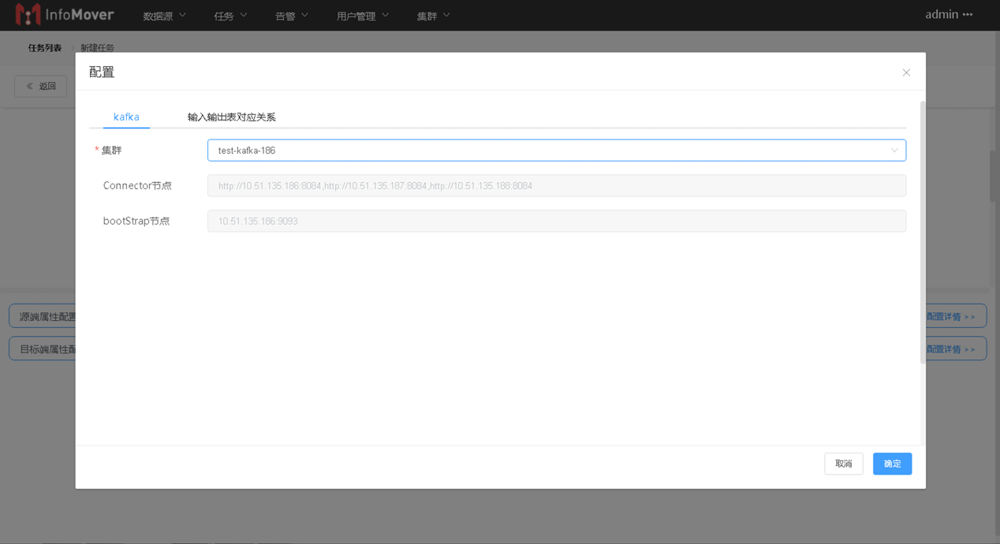
输入输出表对应关系
- 功能描述: 配置数据表与Kafka Topic的映射关系。
- 操作步骤：
- 勾选“备选”中的表；
- 点击“+”添加至输出Topic（Topic名称自动生成）。
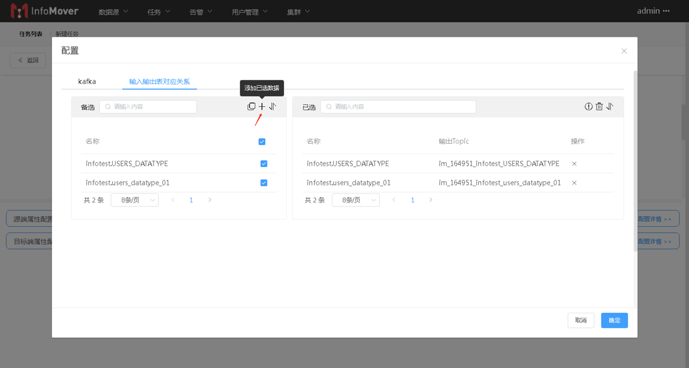
# external_kafka
双击“目标端信息”节点或点击“目标端属性”进入输出目标配置：
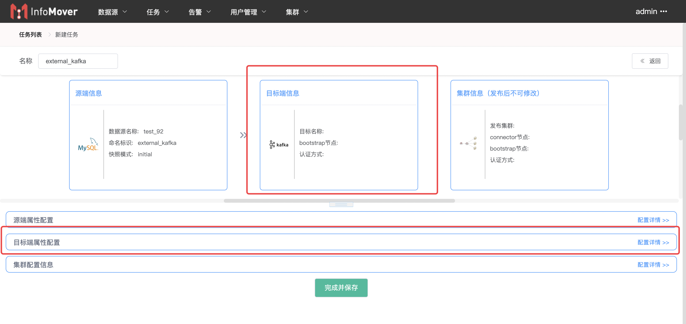
Kafka
- 功能描述: 配置存放数据的Kafka。
- 操作步骤：
- 选择已配置Kafka类型的“数据源”链接;
- “bootstrap地址”信息自动带出。
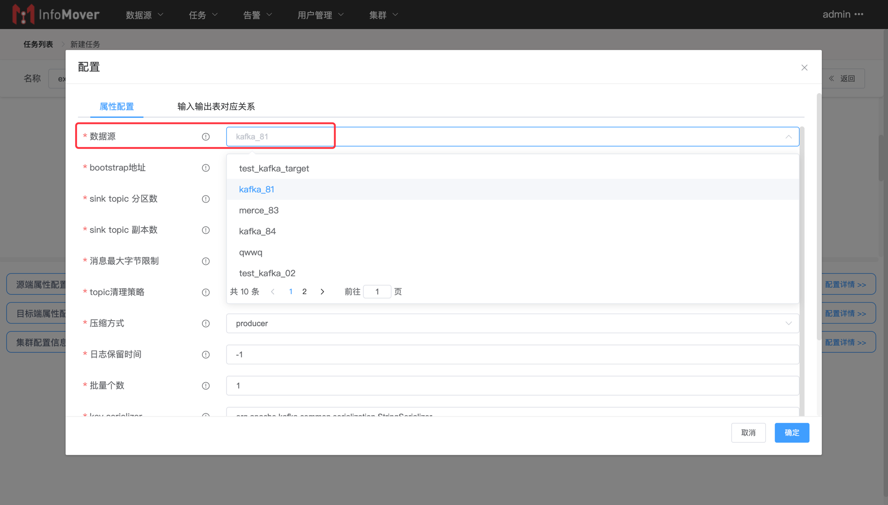
- 参数列表
| 参数名称 | 参数含义 | 必填 | 特殊说明 |
|---|---|---|---|
| 数据源 | Kafka集群链接信息，数据源页面配置。 | 是 | |
| bootstrap地址 | Kafka集群地址信息，默认是Kafka数据源链接信息获取。 | 是 | 不可在此处修改 |
| sink topic 分区数 | 默认值为1。 | 是 | |
| sink topic 副本数 | 默认值为1。 | 是 | |
| 消息最大字节限制 | 默认值为2000000。 | 是 | |
| topic清理策略 | 默认值为delete。 | 是 | delete compact |
| 压缩方式 | 默认值为producer。 | 是 | producer uncompressed gzip snappy |
| 日志保留时间 | 默认值为-1。 | 是 | |
| 批量个数 | 默认值为1。 | 是 | |
| key serializer | 默认值为org.apache.kafka.common.serialization.StringSerializer。 | 是 | |
| value serializer | 默认值为org.apache.kafka.common.serialization.StringSerializer。 | 是 | |
| value schemas show | 默认值为false。 | 是 | |
| value converter | 默认值为org.apache.kafka.connect.storage.StringConverter。 | 是 | |
| 高级选项 | |||
| key converter | 默认值为org.apache.kafka.connect.storage.StringConverter。 | 是 | |
| key schemas show | 默认值为false。 | 是 |
输入输出表对应关系
- 功能描述: 配置数据表与Kafka Topic的映射关系。
- 操作步骤：
- 勾选“备选”中的表；
- 点击“+”添加至输出Topic（Topic名称默认自动生成，可修改）。
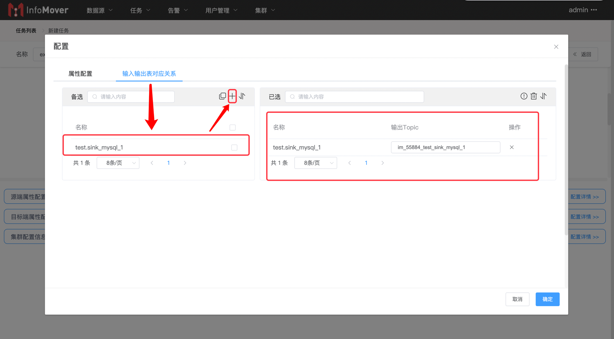
# 集群配置信息
双击“集群信息”节点或点击“集群配置信息”进入输出目标配置：
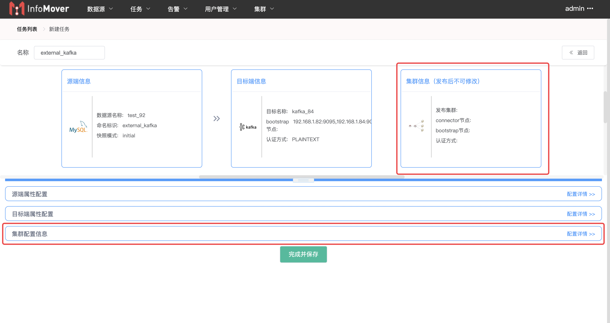
- 功能描述: 配置任务运行的使用的Connector集群。
- 操作步骤：
- 选择“集群”链接；
- “Connector节点”、“bootStrap节点”信息自动带出。
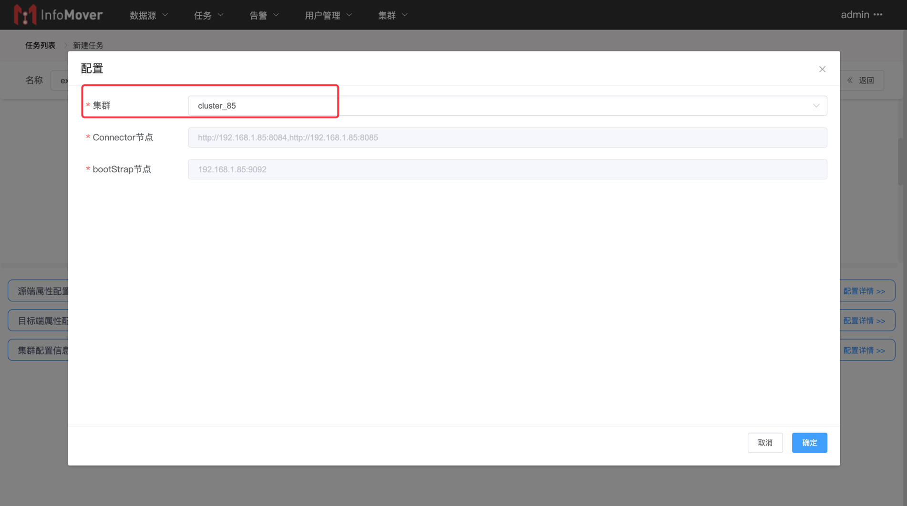
# 同步任务
# 任务配置
- 功能描述: 配置任务名称、类型及数据源与输出目标类别。
- 操作步骤：
- 配置任务名称：demo-sync；
- 选择任务类型为“同步任务”；
- 选择数据源类别，可选Oracle/MySQL/postgres；
- 选择输出目标类别，可选Oracle/MySQL/postgres。
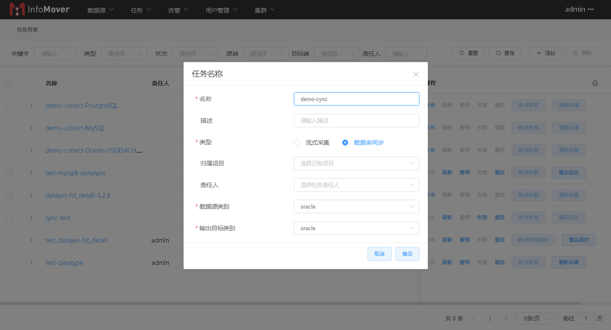
点击“确认”默认进入任务配置页面：
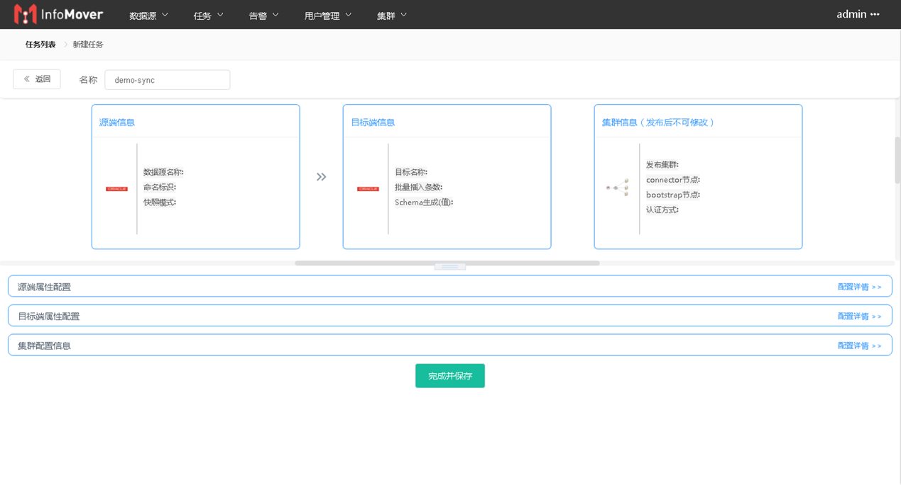
# 源端属性配置
源端属性配置参考流式采集的源端属性配置。
# 目标端属性配置
# Oracle目标端属性配置
双击“目标端信息”节点或点击“目标端属性”进入输出目标配置：
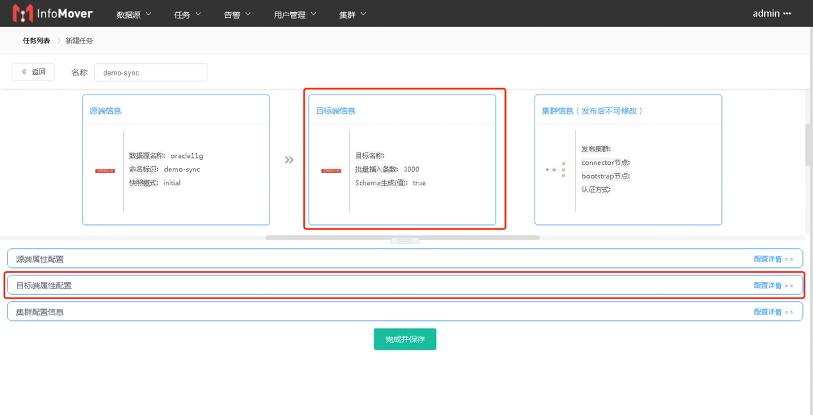
属性配置
- 功能描述: 配置数据源属性。
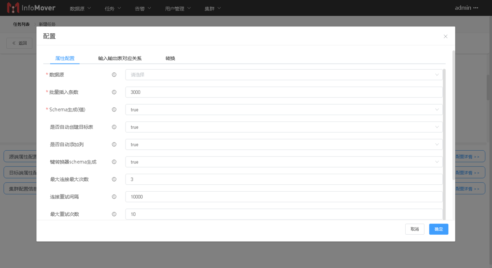
- 参数列表
| 参数名称 | 参数含义 | 必填 | 特殊说明 |
|---|---|---|---|
| 数据源 | 数据库链接。 | 是 | 选择“数据源”配置的数据库链接 |
| 批量插入条数 | 批量插入条数,默认3000。 | 是 | |
| Schema生成（值） | Schema生成(值)，默认true。 | 是 | |
| 是否自动添加列 | 当发现相对于记录模式丢失时，是否通过发出自动在表模式中添加列，默认true。 | ||
| 最大连接最大次数 | 尝试获取有效 JDBC 连接的最大次数，默认3. | ||
| 连接重试间隔 | 连接尝试之间的间隔时间，默认10000。 | ||
| 最大重试次数 | 最大重试次数，默认10. | ||
| 错误后重试前等待的时间 | 错误后重试前等待的时间，默认3000. | ||
| 白名单过滤条件 | 逗号分隔的记录值字段名称列表。 如果为空，则使用记录值中的所有字段，否则用于过滤到所需字段。 | ||
| 数据库时区 | 时间的值的 JDBC 时区。 |
输入输出表对应关系
- 功能描述: 配置数据表映射关系及表主键信息。
- 操作步骤：
- 勾选“备选”中的表；
- 点击“+”添加至输出表，填写“输出表”、“主键”。
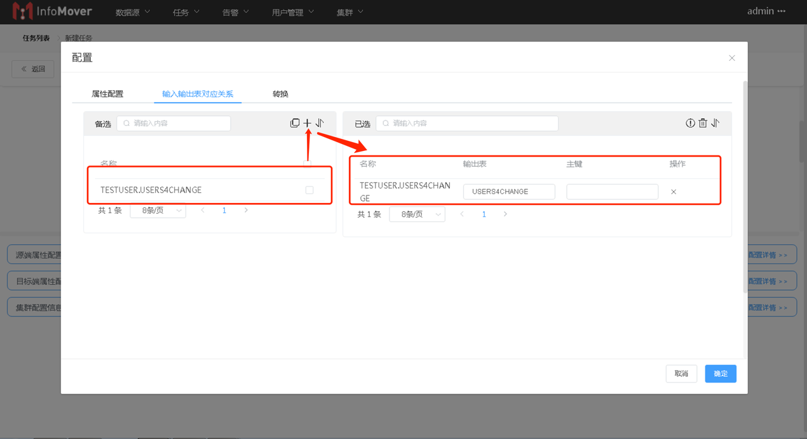
转换
- 功能描述: 配置数据转换路由规则。
- 操作步骤：
- 填写“名称”；
- 选择“调用模型”。
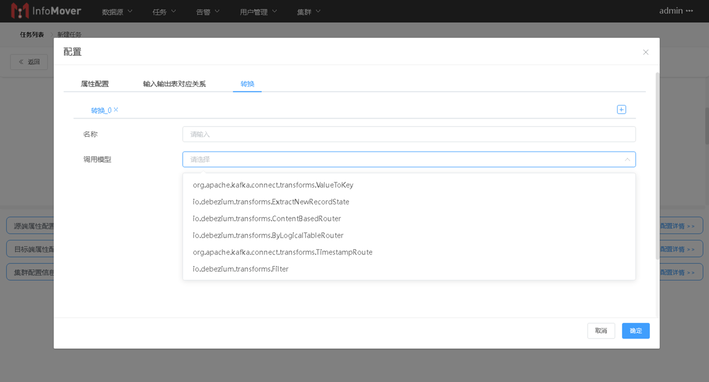
# MySQL目标端属性配置
双击“目标端信息”节点或点击“目标端属性”进入输出目标配置：
属性配置
- 功能描述: 配置数据源属性。
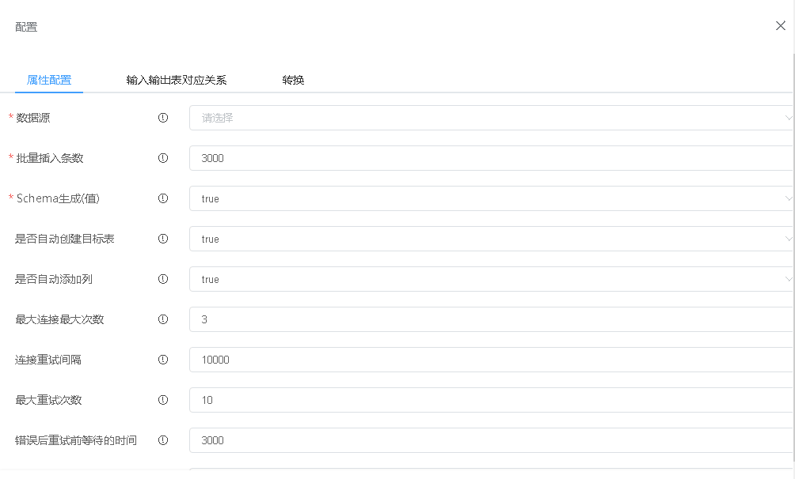
- 参数列表
| 参数名称 | 参数含义 | 必填 | 特殊说明 |
|---|---|---|---|
| 数据源 | 数据库链接。 | 是 | 选择“数据源”配置的数据库链接 |
| 批量插入条数 | 批量插入条数,默认3000。 | 是 | |
| Schema生成（值） | Schema生成(值)，默认true。 | 是 | |
| 是否自动创建目标表 | 是否根据记录模式自动创建目标表，默认true。 | ||
| 是否自动添加列 | 当发现相对于记录模式丢失时，是否通过发出自动在表模式中添加列，默认true。 | ||
| 最大连接最大次数 | 尝试获取有效 JDBC 连接的最大次数，默认3. | ||
| 连接重试间隔 | 连接尝试之间的间隔时间，默认10000。 | ||
| 最大重试次数 | 最大重试次数，默认10. | ||
| 错误后重试前等待的时间 | 错误后重试前等待的时间，默认3000. | ||
| 白名单过滤条件 | 逗号分隔的记录值字段名称列表。 如果为空，则使用记录值中的所有字段，否则用于过滤到所需字段。 | ||
| 数据库时区 | 时间的值的 JDBC 时区。 |
输入输出表对应关系
- 功能描述: 配置数据表映射关系及表主键信息。
- 操作步骤：
- 勾选“备选”中的表；
- 点击“+”添加至输出表，填写“输出表”、“主键”。
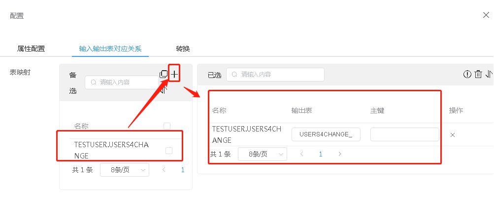
转换
- 功能描述: 配置数据转换路由规则。
- 操作步骤：
- 填写“名称”；
- 选择路由类型。
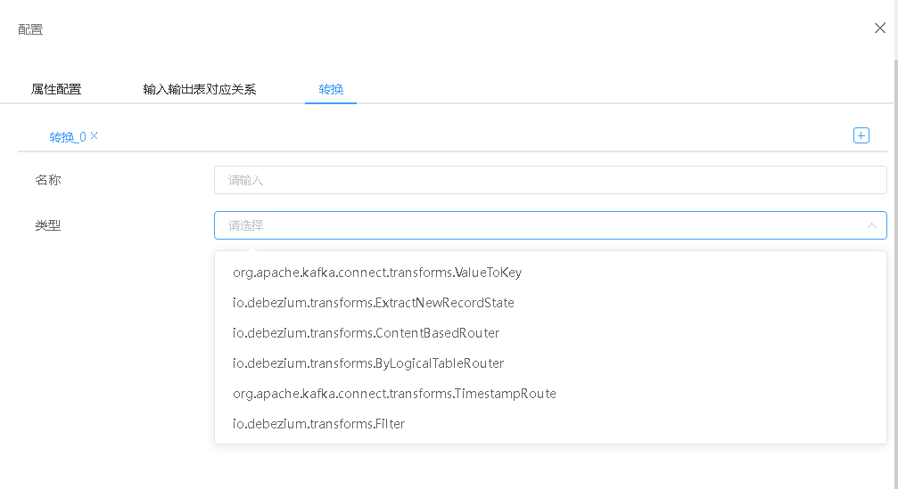
# PostgreSQL目标端属性配置
双击“目标端信息”节点或点击“目标端属性”进入输出目标配置：
属性配置
- 功能描述: 配置数据源属性。
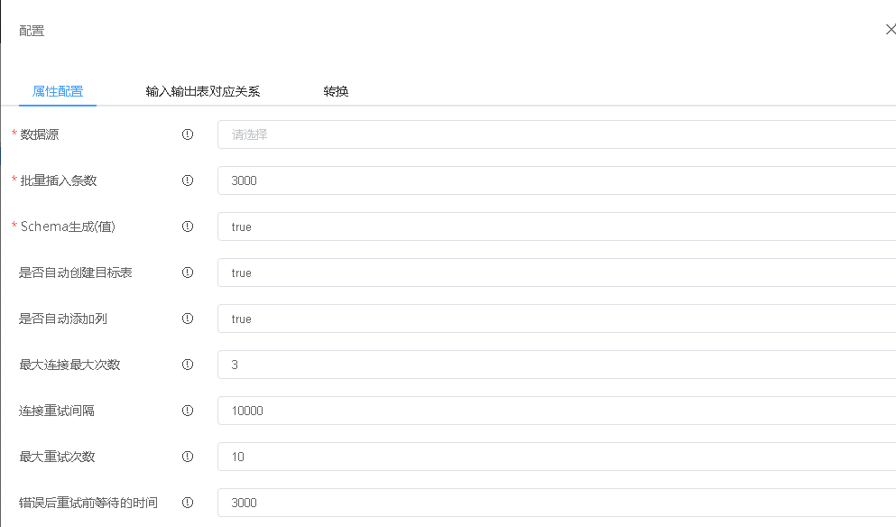
- 参数列表
| 参数名称 | 参数含义 | 必填 | 特殊说明 |
|---|---|---|---|
| 数据源 | 数据库链接。 | 是 | 选择“数据源”配置的数据库链接 |
| 批量插入条数 | 批量插入条数,默认3000。 | 是 | |
| Schema生成（值） | Schema生成(值)，默认true。 | 是 | |
| 是否自动创建目标表 | 是否根据记录模式自动创建目标表，默认true。 | ||
| 是否自动添加列 | 当发现相对于记录模式丢失时，是否通过发出自动在表模式中添加列，默认true。 | ||
| 最大连接最大次数 | 尝试获取有效 JDBC 连接的最大次数，默认3. | ||
| 连接重试间隔 | 连接尝试之间的间隔时间，默认10000。 | ||
| 最大重试次数 | 最大重试次数，默认10. | ||
| 错误后重试前等待的时间 | 错误后重试前等待的时间，默认3000. | ||
| 白名单过滤条件 | 逗号分隔的记录值字段名称列表。 如果为空，则使用记录值中的所有字段，否则用于过滤到所需字段。 | ||
| 数据库时区 | 时间的值的 JDBC 时区。 |
输入输出表对应关系
- 功能描述: 配置数据表映射关系及表主键信息。
- 操作步骤：
- 勾选“备选”中的表；
- 点击“+”添加至输出表，填写“输出表”、“主键”。
转换
- 功能描述: 配置数据转换路由规则。
- 操作步骤：
- 填写“名称”；
- 选择路由类型。
# 集群配置信息
参考采集任务集群配置信息。
# 任务操作
# 任务保存
- 功能描述：保存任务配置。
点击“完成并保存”按钮保存任务：
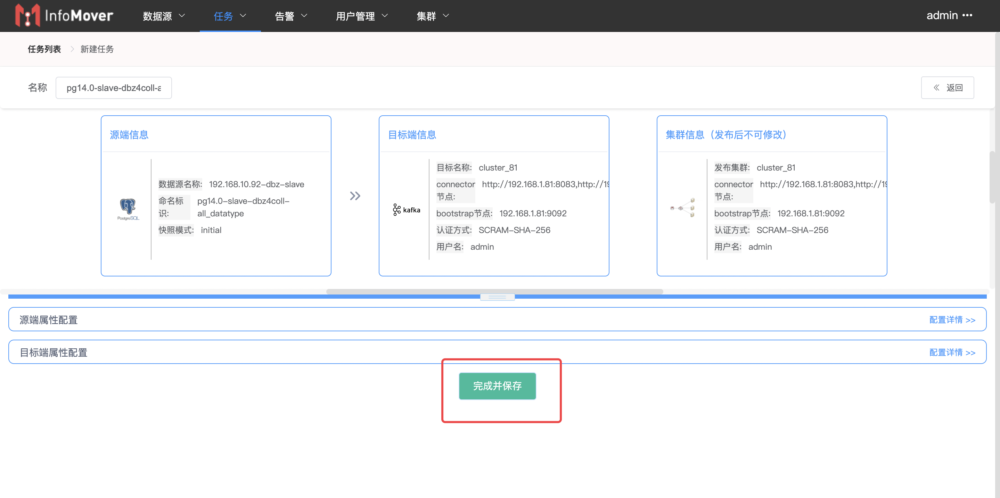
# 任务发布
- 功能描述：发布任务到集群执行。
在“任务列表”页面操作项点击“发布”按钮，“确认”发布即可将任务发布至任务配置的集群。
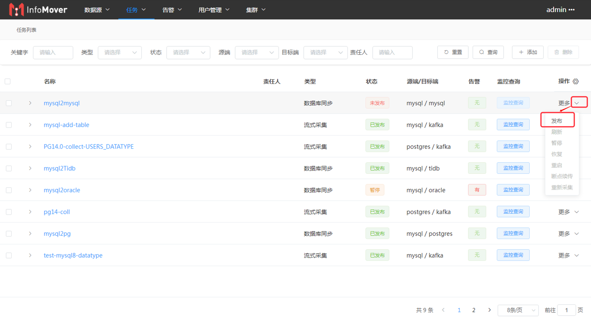
页面提示发布成功后，可进行任务“暂停”或“重启”操作：
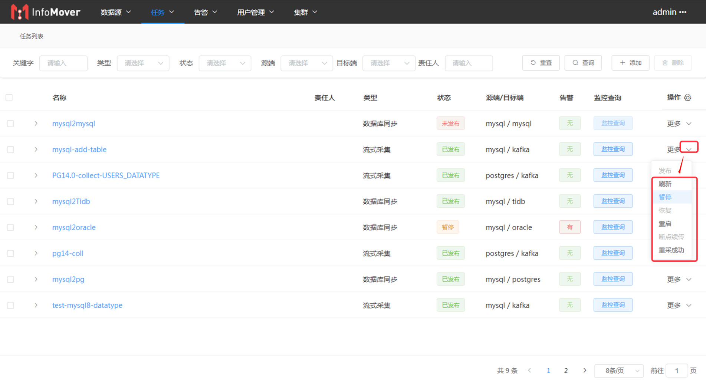
# 任务刷新
- 功能描述：指修改配置后，让任务重新加载最新配置到connector中。
适用于处在“暂停”、“已发布”状态的任务，在“任务列表”页面操作项点击“刷新”按钮，在弹出提示框点击“确认”即可刷新任务配置并启动任务。
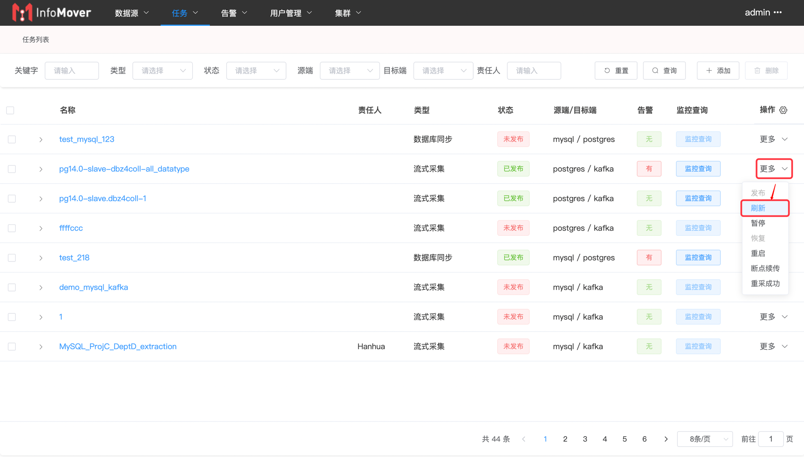
# 任务暂停
- 功能描述：暂停任务执行。
适用场景：降低Connector节点、源端数据库、目标端负载压力。
在任务配置页面或“任务列表”页面点击“暂停”按钮，在弹出提示框点击“确认”即可暂停任务。
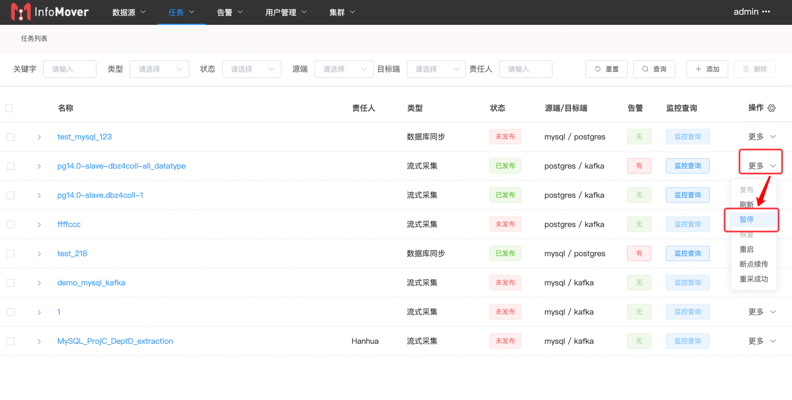
暂停后的任务状态为“暂停”，可对任务进行“恢复”、“重启”。
# 任务恢复
- 功能描述：将“暂停”状态的任务恢复执行。
适用于处在“暂停”状态的任务，在任务配置页面或“任务列表”页面点击“恢复”按钮，在弹出提示框点击“确认”即可恢复任务运行。
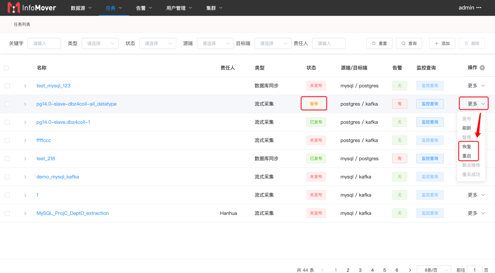
页面提示“操作成功”，任务状态转为“已发布”。
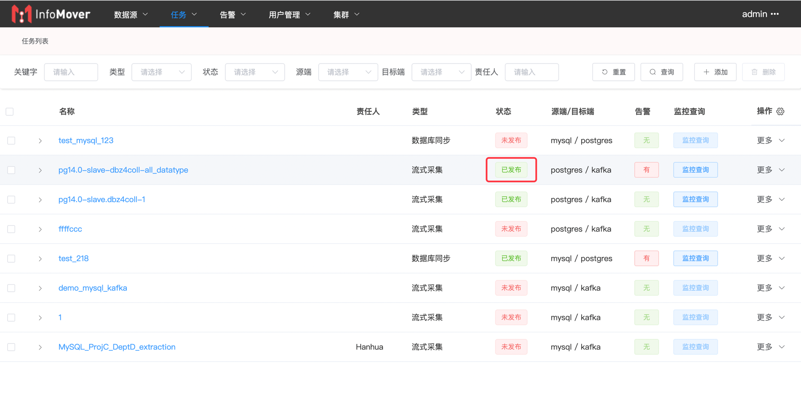
# 任务重启
- 功能描述：重启任务。
适用场景：当任务发生错误，人为修复后，再将任务重新启动。
适用于处在“暂停”、“已发布”状态的任务，在任务配置页面或“任务列表”页面点击“重启”，在弹出提示框点击“确认”即可重启任务。
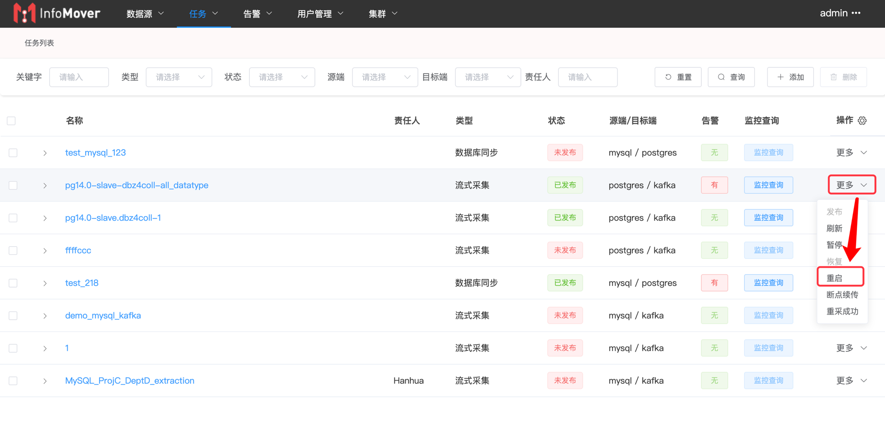
# 断点恢复
- 功能描述：恢复因history_schema与采集表不一致而报错停止的任务。
适用场景：只针对whose schema isn’t known to this connector报错的恢复。
适用于告警状态为“有”的任务且任务报错信息为“whose schema isn’t known to this connector”，在 “任务列表”页面点击“断点恢复”，在弹出提示框点击“确认”即可进行任务恢复。
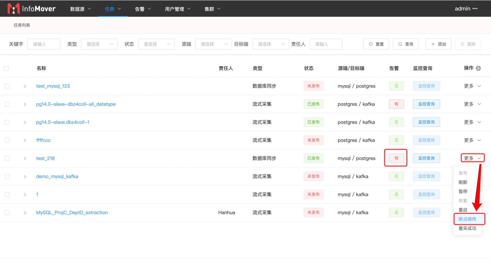
# 重新采集
- 功能描述：重新采集数据，重建Connector采集任务，且已产生的目标端对象（表、topic）名称不变。
适用场景：任务因失败、数据不一致等问题需要重新采集数据时，下游要求目标端表、topic等保持名称一致；任务新增采集表。
适用于“运行中”、“暂停”等状态的任务，在“任务列表”页面点击“重新采集”/“重采成功”/“重采失败”，在弹出提示框点击“确认”即可进行任务重新采集。
# 任务监控
- 功能描述：监控任务运行状态。
点击任务对应的“监控查询”进入连接器监控页面：
- 功能描述: 对单个连接器进行“暂停”、“恢复”、“重启”、“删除”的操作，可查看“连接器状态”及“监控日志”。
- 操作说明：
- 暂停：暂停“运行中”的连接器；
- 恢复：恢复“暂停”状态的连接器；
- 重启：重新启动连接器；
- 删除：删除连接器，删除连接器后可在任务页面进行任务“重启”、“刷新”操作后自动新建连接器；
- 监控日志：下方可查看连接器的监控日志，可按日志类别筛选日志，点击“刷新”自动刷新最新日志，点击“下载”进行日志下载；
# 删除任务
- 功能描述：删除现有任务。
在任务配置页面或“任务列表”页面选择任务，点击“删除”按钮，在弹出提示框点击“确认”即可删除任务。
勾选“删除任务级联删除告警信息”可级联删除相关的告警信息；
勾选“删除任务级联删除Topic”可级联删除任务运行产生的Kafka Topic（Connector运行所在Kafka集群上的Topic）。